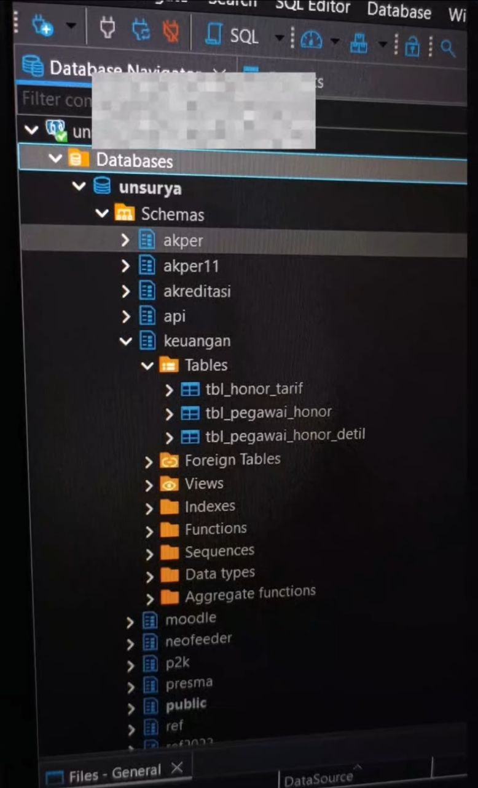

Penemuan .env File Exposure di Universitas Dirgantara Marsekal Suryadarma
Ringkasan
Penemuan file .env yang dapat diakses publik berisi konfigurasi database sensitif di website universitas.
Temuan
Saya menemukan sebuah direktori .env yang dapat diakses publik pada website kampus. File ini berisi konfigurasi database yang sangat sensitif:
.env file content
# Database Configuration
DB_HOSTNAME=[sensitive]
DB_USERNAME=[sensitive]
DB_PASSWORD=[sensitive]
DB_NAME=[sensitive]Dengan kredensial tersebut, saya berhasil melakukan koneksi ke database menggunakan DBeaver dan mengonfirmasi akses penuh ke sistem database.

Bukti berhasil terkoneksi ke database menggunakan kredensial yang ditemukan
Dampak
- Full Database Access: Akses penuh ke seluruh data mahasiswa, dosen, dan sistem akademik
- Data Breach Potential: Data sensitif seperti informasi pribadi, nilai, dan administrasi terancam
- Privilege Escalation: Potensi untuk mendapatkan akses lebih tinggi ke sistem
Resolusi
Laporan segera dikirimkan ke tim IT universitas melalui saluran yang tepat. Dalam waktu singkat, file .env telah diamankan dan tidak lagi dapat diakses publik.